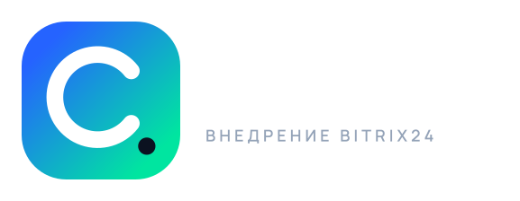
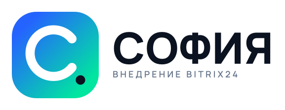
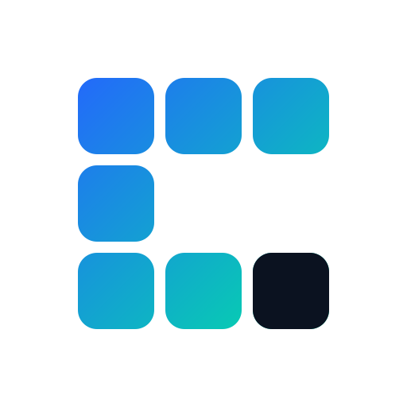
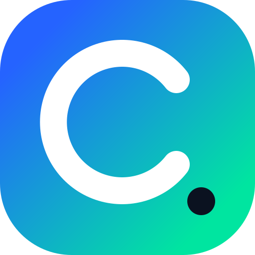
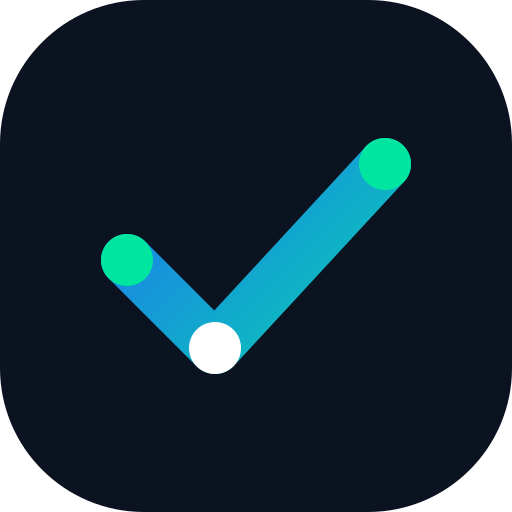

София
Внедрение Bitrix24. Знак, логотип и правила использования. Основная идея — собрать разрозненные процессы в единую работающую систему.


Основной знак — «Модуль»
Знак собран из блоков, как интерфейс Bitrix24. Разрозненные процессы складываются в единую систему, а акцентный блок отмечает результат.


Семь блоков образуют кириллическую «С». Акцентный блок в нижнем ряду — финальный модуль, который превращает набор инструментов в работающую систему. Градиент ведёт от синего (задача) к мятному (результат).
Размеры
Минимум для цифровых носителей — 24 px. В фавиконе используется упрощённая версия из трёх блоков.
Палитра
Альтернативные концепции
Если нужен другой характер — вот два направления, из которых можно собрать финальную версию.

«Точка»
Незамкнутый круг и точка: процесс, который доведён до результата. Более минималистичный и «продуктовый» характер, но точка хуже читается в мелких размерах.

«Путь»
Маршрут из трёх точек, который складывается в галочку. Прямее говорит о результате и этапах внедрения, но менее уникален визуально.
Правила
Можно
- Использовать плитку или знак без подложки
- Ставить логотип на светлый или тёмный фон
- Масштабировать пропорционально
- Оставлять вокруг знака свободное поле не меньше половины его высоты
Нельзя
- Менять цвета и направление градиента
- Поворачивать, растягивать и добавлять тени
- Убирать акцентный блок или менять его цвет
- Разбирать знак на отдельные блоки и менять сетку
- Ставить знак на пёстрый фон без подложки